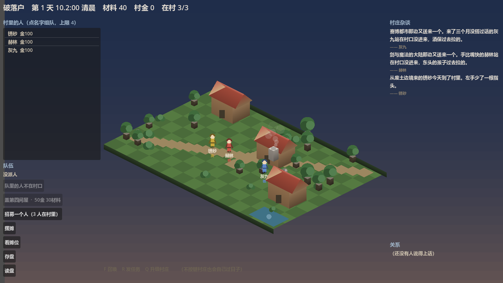

开发进度总览
2026-10-21 这一天：画面几乎没变，变的是规则与引擎。 14 条待定决策被拍板并落地，战斗从「掷一次 0.65 的硬币」换成了真引擎， 标定实测还揪出了两个只有跑起来才会露的坑。
单元测试
802 → 812
全绿 · 新增 10 条
变异看红
18 档
每档改坏一处 · 守卫必红
关闭的决策
14 条
D-057 … D-070
本次提交
11 笔
全部已推送
今天改了什么（前 → 后）
左边是今天早上的样子，右边是现在。
| 今天之前 | 现在 | |
|---|---|---|
| 战斗 | 掷 0.65 硬币的占位实现；连「对手是谁」都没有 | 真引擎：七个插拔点 + 性格×投入度换算 + 怪物三档 + 中毒 + AI 集火 |
| 副本结果 | 1000 天里 9989 场全败、掉落 0、成交 0 | 能赢、能掉、能卖；胜率目标 70–90%（待标定复核） |
| 基础价格 | 5/3/8 占位值，还被标成了别的条目的编号 | 3/2/5（D-057 已确认）· 内外两份配置不许分叉 |
| 副本金币 X | 0.10 —— 是在已经不存在的旧游戏上测的 | 0.05 —— 两档实测的固定点（+0.37 / −0.30 金·天） |
| 九种建筑 | 九栋全部「待定」，谁都不敢动 | 七栋裁决不做（人口/采集点/装备三个大概念挡在门外）+ 两栋功能已定 |
| 改价的后果 | 开发者一改价，自检立刻红、CI 跟着红 | 换一张价格表跑自检，仍然全绿（机器背书） |
基线 18 章 · 模块全景
绿 = 做完；橙 = 规则/机制就位、还差内容或平衡；红 = 还没开工。格子里写的是还差什么。
§3 核心循环
闭环已跑通
§4 英雄系统
差装备数值体系
§5 摆摊与经济
差「完整城市成长」
§6 本土居民与剧情
差剧情内容
§7 村庄杂谈
十类事件：五类已实现、五类已登记缺口
§8 副本与战斗
今天落地：规则已实现；差平衡验证
§9 关系与社会行为
差纠纷/复仇链、幅度与触发源
§10 召唤与收集
差概率池/保底/重复处理
§11 世界与大事件
完全没开工（内容量最大）
§12 村庄与建筑
七栋裁决不做；两栋差建造流程
§13/14/15 技术与规范
结构守卫、验收规范、阶段纪律
这一天的时间线
-
21:00
两轮问卷：8 项决策 + 2 张表，全部拍板
价格、队伍人数、战斗形态、属性来源、伤害式子、命中、状态效果、敌方形态；加上战斗数值表与建筑/行为链表。
-
21:20
战斗真做出来了
占位实现连同「固定胜率 0.65」整类删除；领域层补上属性换算表、怪物三档、七个插拔点与回合引擎。IT-31 从「缺」变成「已写」。
-
21:30
标定揪出「副本从不变胜」
1000 天实测：9989 场全败、0 掉落、0 成交。根因是数值按 4 人小队算、而游戏只派 2 人 —— 而且那张表的算式我自己就验错了。按两人小队重算，并补了一条「两人小队必须赢第一关」的断言。
-
21:40
补跑标定 ⇒ 固定点浮出来了
X=0.05 两个种子都稳态（+0.37 / −0.30 金·天）⇒ 旧推荐值 0.10 是在已经不存在的旧游戏上测的，作废。顺带发现胜率 100% ⇒ 怪物再调难。
现在的画面
这是刚才跑起来的实机画面（1280×720）。诚实话：画面本身变化很小 —— 一天的进展在规则、引擎与数值里，不在美术上。

破落村 · 第 1 天 清晨 · 材料 40 · 在村 3/3 · 村庄杂谈已有内容。
村里有 3 座土屋与一个市集，村里 3 人各 100 金。
但这 3 个人现在真的会打副本了，而且这一版的副本能赢（昨天的版本 9989 场全败）。
还开着的
- 下一轮（你已选）：关系变化的幅度与触发源 —— C2 只差「一次纠纷 = 关系 −N」的 N，和纠纷从哪来
- 建造流程（D-003）：九栋建筑的功能已定，就差「怎么建」—— 成本 / 建造时间 / 有几级
- 阶段耗时（T-001 / T-002）：战斗回合 ↔ 模拟时间的换算
- 标定复核：怪物调难后（精英 150 / 首领 180）胜率是否落到 70–90%，X=0.05 是否仍平
- 「受伤 / 康复」还没变成真的事件：战斗里英雄会掉血，但那不掉在英雄身上（§4.4 的状态清单仍待定）
数据来源：production/38_开发完成度盘点_V1.0.md（模块全景）·
production/07_技术决策与待确认事项.md（D-057…D-070）·
production/qa/parameters.json（参数台账）·
标定数据 %TEMP%/ccgs-recal（1000 天采集）